1. Identificar o CNPJ do Cliente.
1.1. → Abrir O.S
2. Gerar Nota de Entrada e Saída (Gerar NFE e NFS).
2.1. → Minimal -> Ibyte -> Logística - NFS e NFE
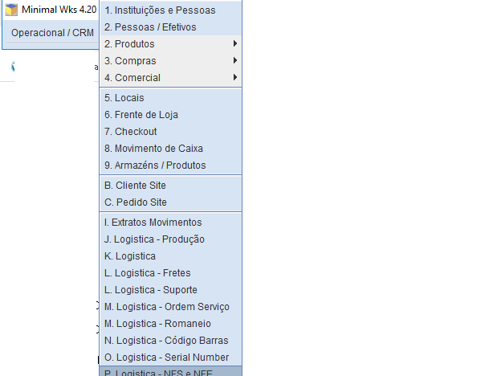2.2. → Clicar em cancelar
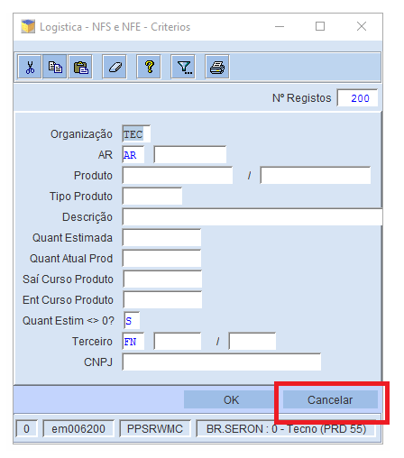2.3. → Comandos -> Gerar NFE e NFS Cliente e Preencher
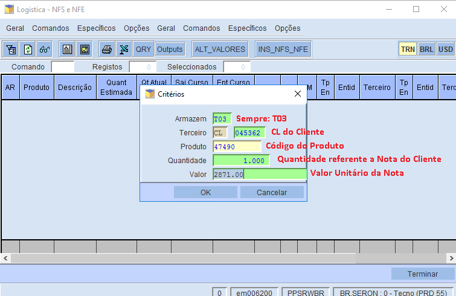2.4. → Digitar NOS (O.S Gerada) e Terminar
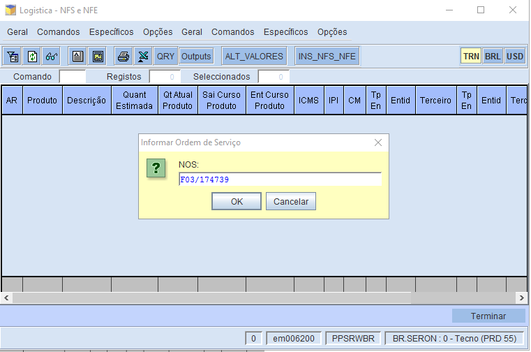3. Validação da NFE
3.1. → Minimal -> Ibyte -> Logística
3.2. → Preencher com CL do Cliente e NF%. Ir na aba Linhas e preencher com código do produto. Clicar em ok, como abaixo:
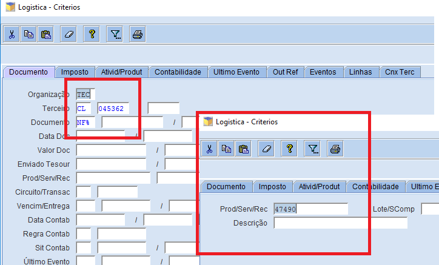3.3. → Validar documento de entrada (NFE). Selecionar as duas notas e clicar em ALTERAR.
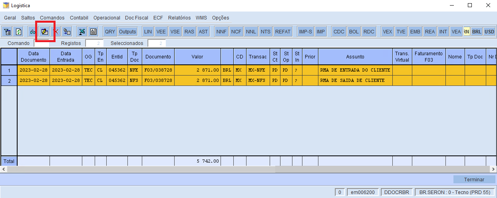3.4. → Apagar código do produto e adicionar CIF em Tipo de Frete, como abaixo:
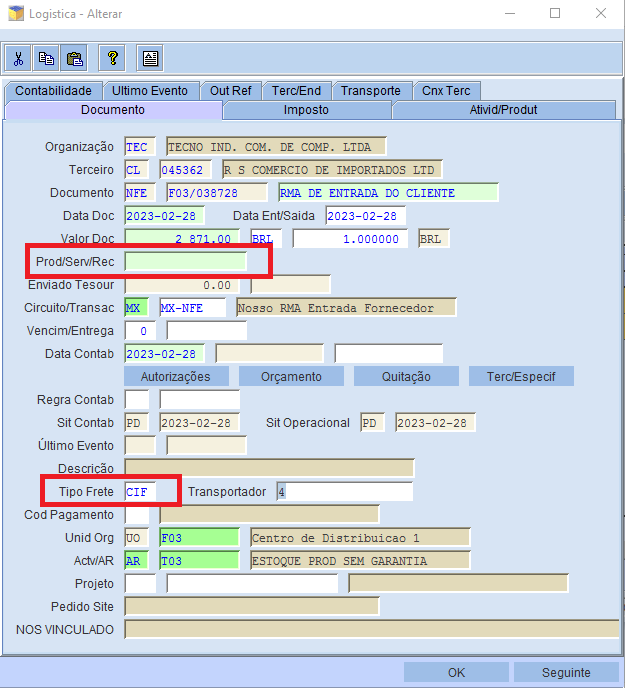3.5. → Clicar em texto associado e digitar "Referente a NF: (número da nota).
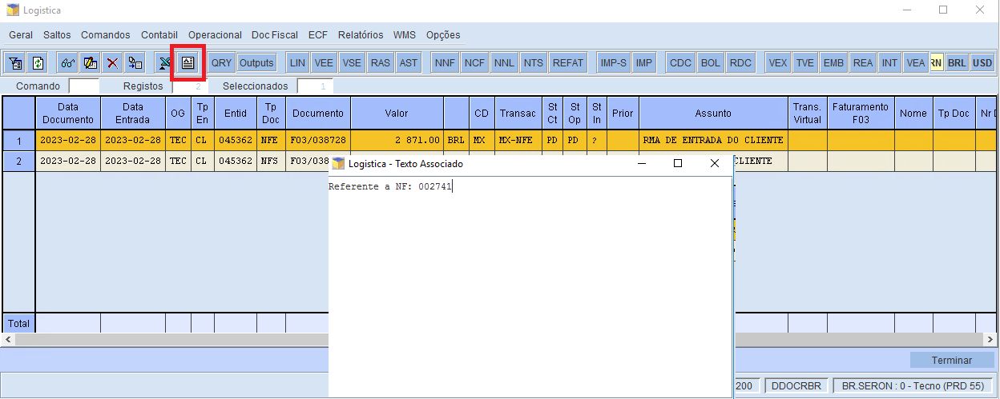3.6. → Caso a nota tenha mais produtos do que o já inserido, clicar em LINHAS > INSERIR e PREENCHER como abaixo:

3.7. → Caso não possua mais produto na nota, seguir:
3.8. → Clicar em Contábil > Confirma e Operacional > Confirmar EMISS/RECEPCAO
3.9. → Validar ENTRADA do produto, clicar em VEE e preencher o Código de Barras e Serial Number (Código+01).
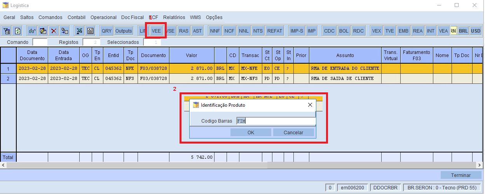3.10. → Clicar em DOC Fiscal > RMA > Gerar TNF Retorn FN (NFE 915).
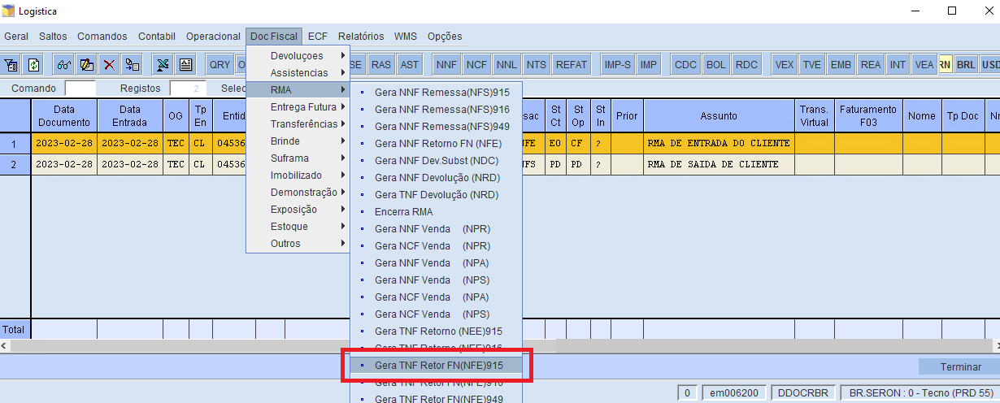3.11. → Preencher:
Número do Documento: Filial F51: final do CNPJ 53-35 / Filial F03: final do CNPJ 04-57 / Modelo: F51/938491 Data Emissão: Data que contém na NOTA Data de Selo: Data da Entrada3.12. → Confirmar TNF. Clicar em Operacional > Confirm FORNECIM/OPERAÇAO. E digitar a chave de acesso
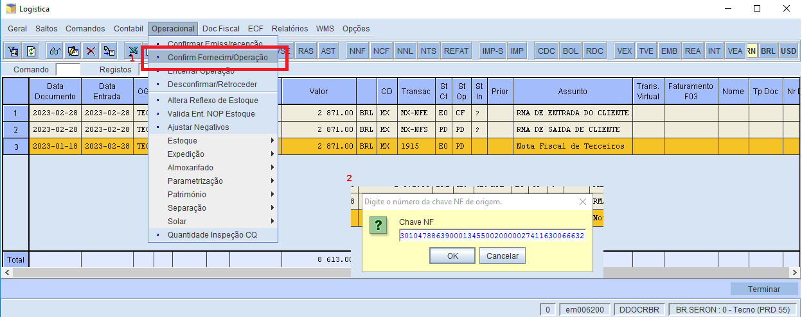3.13. → Confererir se a NFE está: E0 e CT. E a TNF está: E0 e CF. E as Notas devem ter o MESMO VALOR.
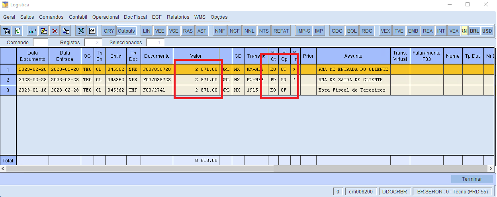4. Avaliar o produto.
4.1. → Verificar possibilidade de conserto com técnicos.
4.2. → Caso não haja possibilidade de conserto, trocar por um novo. Solicitar no estoque.
5. Validação da NFS
5.1. → Minimal -> Ibyte -> Logística
5.2. → Preencher com CL do Cliente e NF%. Ir na aba Linhas e preencher com código do produto. Clicar em ok, como abaixo:
5.3. → Clicar em Contábil > Confirma e Operacional > Confirmar EMISS/RECEPCAO
5.4. → Validar SAÍDA do produto, clicar em VSE e preencher o Código de Barras e Serial Number (Código+01).
5.5. → Clicar em DOC Fiscal > RMA > Gerar NNF Remessa(NFS) 916.
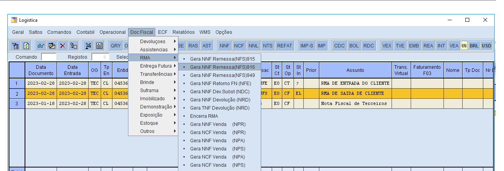5.6. → Clicar em Contábil > Confirma. E clicar em IMP, QTD de Volumes: 1.
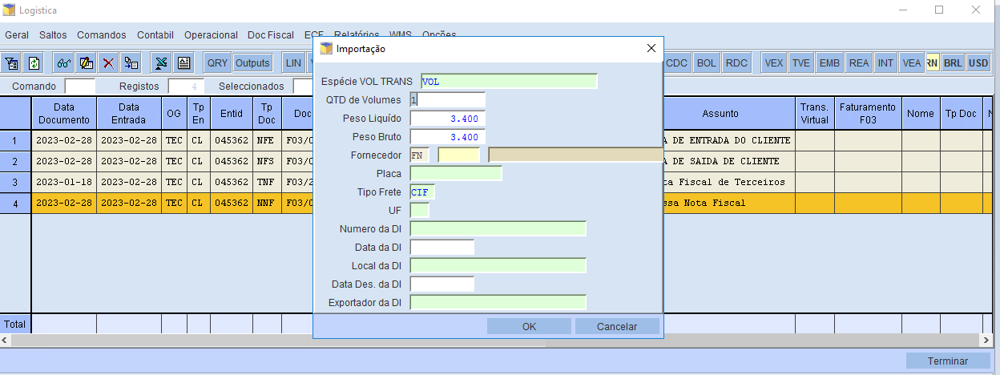5.7. → Imprimir a NOTA do cliente.
5.8. → Confererir se a NFS e NFE está: E0 e CT. E a TNF e NNF está: E0 e CF.
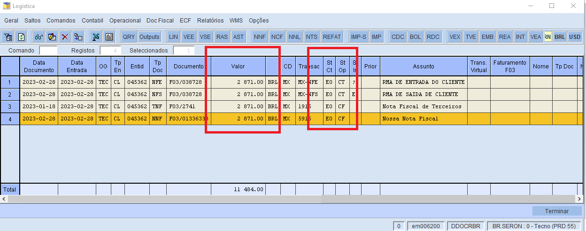